歡迎使用 n8n 自動化工具。本指南綜合了專家建議與實作經驗，將帶領您一步步完成 Google 服務（Gmail, Sheets, Drive 等）的串接設定。即使您沒有程式背景，只要照著步驟操作，也能輕鬆完成。
您可以將 Google Cloud 想像成一個巨大的「健身房」，裡面有各種器材（Gmail, Sheets）。憑證 (Credentials) 就像是您的「會員卡」。為了讓您的私人教練（n8n）能幫您使用器材，您必須先去櫃檯（Google Console）辦一張會員卡，並授權給教練使用。
第一階段：建立 Google Cloud 專案
首先，我們需要在 Google Cloud Platform (簡稱 GCP) 建立一個專屬的專案空間。
（白話文：GCP 就是 Google 提供的「雲端後台管理介面」，專門給開發者或進階使用者管理 API 與服務的地方。）
- 前往 Google Cloud Console 控制台。
- 點選左上角的專案選擇器，然後點擊「新增專案 (New Project)」。 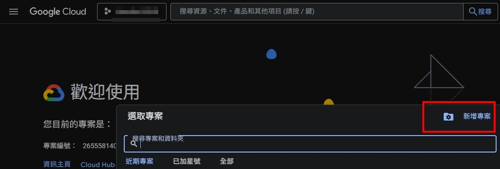
- 在專案名稱輸入
n8n-automation或您喜歡的名稱。 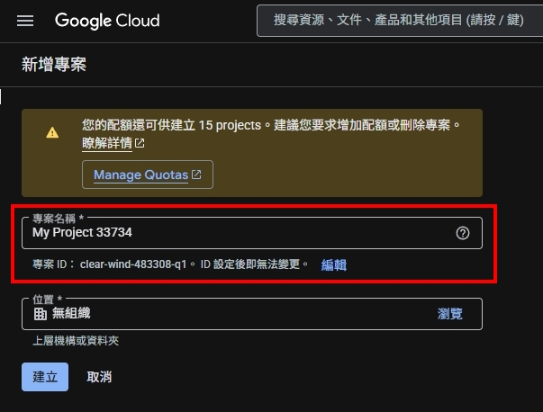 - 點擊「建立」，稍待片刻系統完成建置。
第二階段：啟用 Google API 服務
Google 預設關閉所有功能，我們需要手動開啟 n8n 會用到的服務器材。
- 確認已選取剛剛建立的專案。
- 點擊左側選單的「API 和服務」 > 「啟用 API 和服務」。 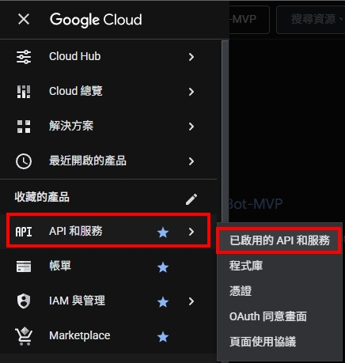
- 點擊上方的「+ 啟用 API 和服務」按鈕進入程式庫。 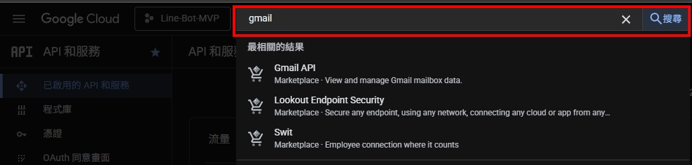
- 搜尋並逐一啟用以下 Google API 服務（Gmail, Sheets, Drive, Docs, Calendar）： 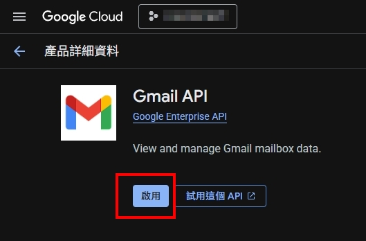
第三階段：設定 OAuth 同意畫面 (OAuth Consent Screen)
這是設定當 n8n 請求 Google API Credential 權限時，Google 彈出的 OAuth 驗證視窗內容。
- 在左側選單點選「API 和服務」 > 「OAuth 同意畫面」。 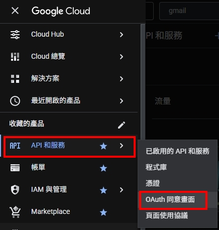
- 點擊下方的「開始」按鈕。 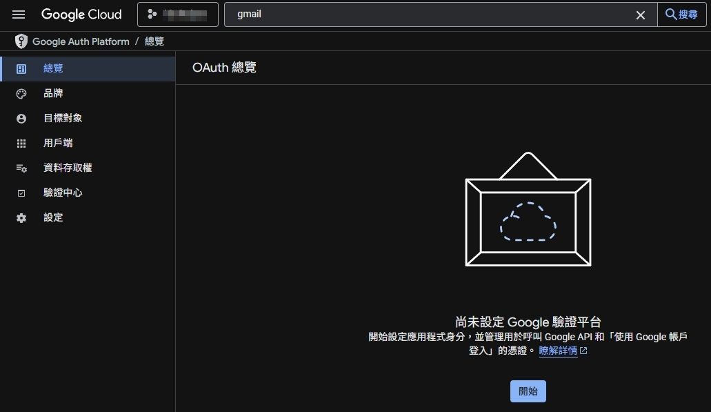
- 在「應用程式資訊」填入您的應用程式名稱、 Email。點擊「下一步」。 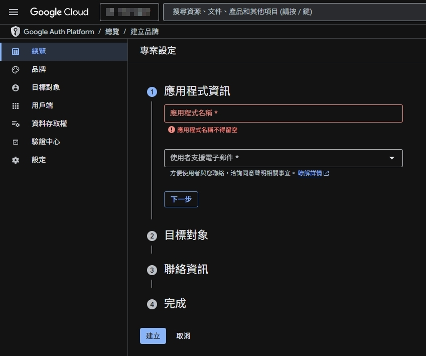
- 目標對象：點選「外部」。點擊「下一步」，再點擊「建立」。 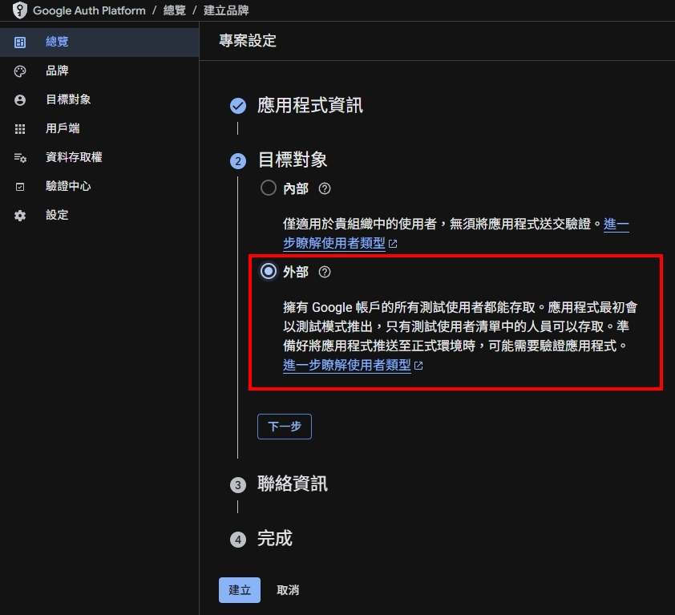
- 左邊會自動跳到總覽，點選「建立 OAuth 用戶端」。 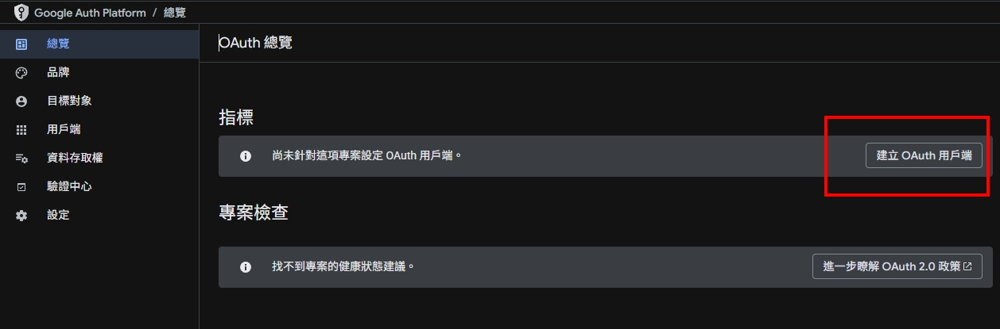
- 建立 OAuth 用戶端 ID：點擊「網頁應用程式」。 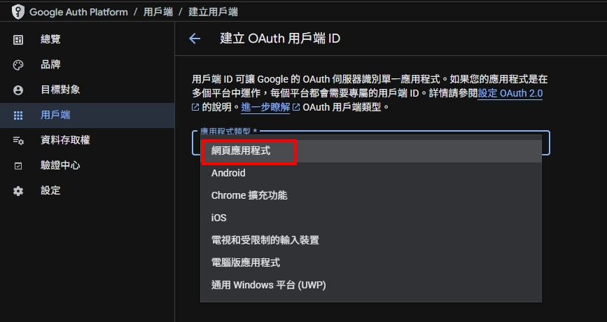
- 應用程式類型會自動帶入剛剛所選，現在請輸入 "名稱" 如 "n8n-automation"。接著需要輸入 "已授權的重新導向 URI"，我們在此暫停一下。 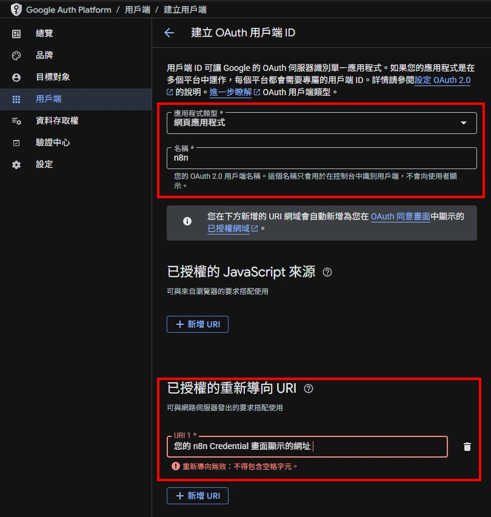
第四階段：建立 n8n Google API Credentials (憑證)
這是最關鍵的技術步驟，我們需要取得 n8n 的回傳網址 (OAuth Redirect URL)、Client ID 與 Client Secret。
- 回到 n8n 介面，新增一個 Google 節點（如 Google Gmail）。
- 點開節點後，再點擊鉛筆圖示，開啟憑證選單。。 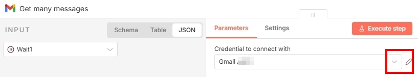
- 點擊 Click To Copy，複製畫面上的OAuth Redirect URL。 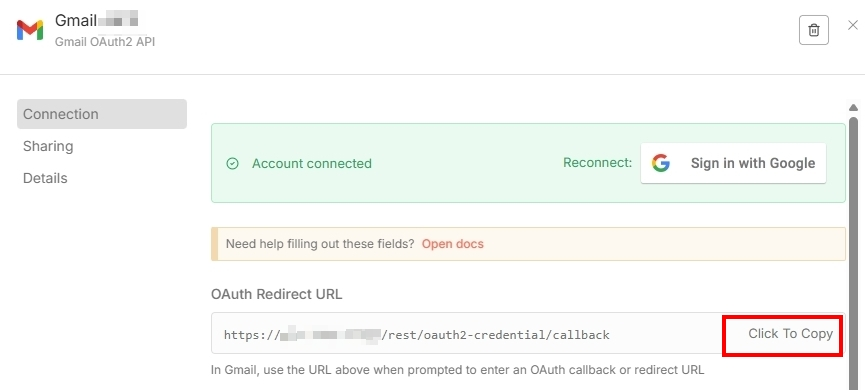
- 再度回到 Google Cloud Console 剛剛的畫面，在已授權的重新導向 URI格子中，貼上剛剛從 n8n 複製的OAuth Redirect URL，然後點選建立。 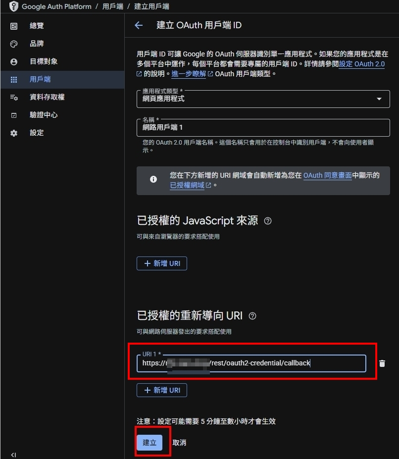
貼上的網址結尾不可以有斜線 /，且必須與 n8n 上顯示的完全一致（包含 https）。
2. 獲取金鑰
畫面會顯示 Client ID (用戶端編號) 和 Client Secret (用戶端密鑰)。請將這兩串代碼複製並保存下來。
（白話文：Client ID 是「帳號」，Client Secret 是「密碼」。這組帳密是專門給 n8n 這位機器人管家使用的，請妥善保管。）
第五階段：完成 n8n 連線
- 回到 n8n 的憑證設定視窗。
- 將 Client ID 與 Client Secret 貼入對應欄位，並點擊右上角的橘色 Save 按鈕。
- 點下方的 Sign in with Google 按鈕。 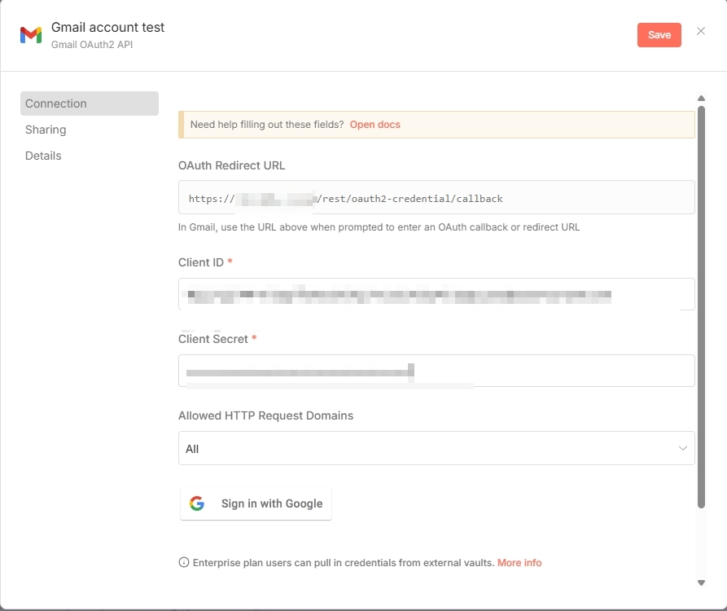
- 選擇您在「測試使用者」步驟中設定的 Google 帳號。 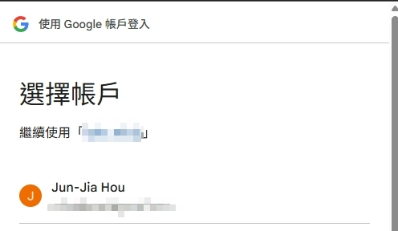
- 處理安全警告：Google 會跳出「未經 Google 驗證」的警告視窗。這是正常現象，因為這是您私人的專案。
請依照下圖指示，點擊「繼續」即可。 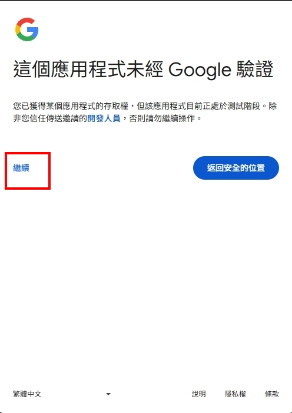圖八：點擊「繼續」 - 點擊 全選，然後拉到畫面最下面，點擊「繼續」。 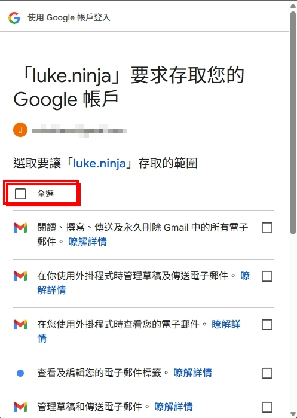
- 顯示 Connection Tested Successfully。 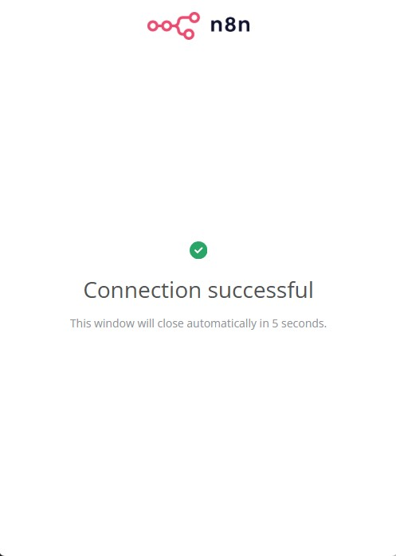
- 關掉小視窗，回到 n8n 的 Gmail Credential 畫面，顯示綠色的 Account Connected。 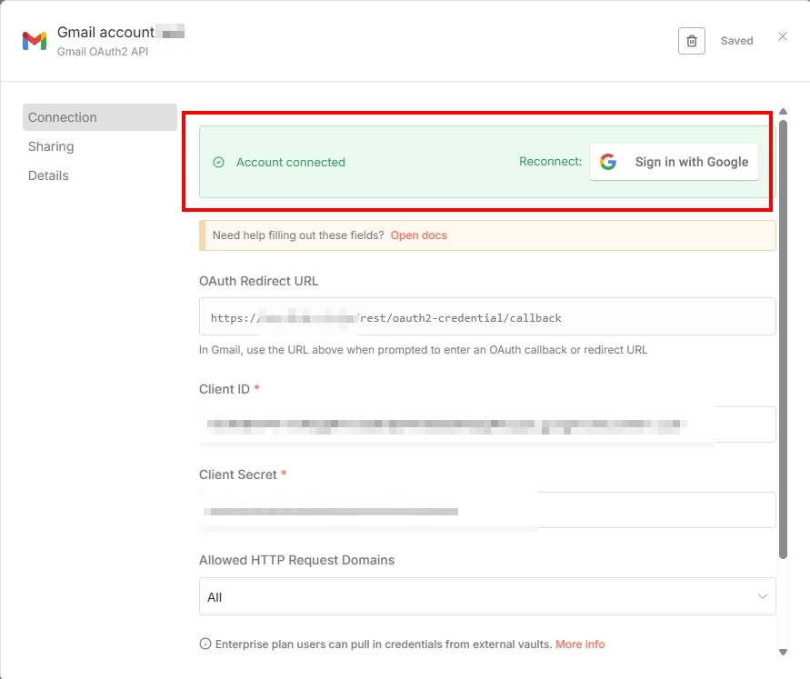
重要：解決「7 天過期」問題
Google 為了安全，規定處於「測試 (Testing)」狀態的應用程式，其授權憑證 (Refresh Token) 只有 7 天有效期。這意味著每週您都需要手動重新連線，非常不便。
若希望長期穩定運行，請將應用程式切換為「正式版 (In production)」。
- 測試版 (Testing)：無需審核，但憑證 7 天過期。適合短期測試。
- 正式版 (In production)：憑證長期有效。但若服務對象是陌生大眾，需通過 Google 嚴格驗證。
操作步驟：
- 回到 Google Cloud Console 的「OAuth 同意畫面」。
- 點擊「發布應用程式 (PUBLISH APP)」按鈕。
- 確認將狀態切換為「正式版 (In production)」。
切換到正式版後，因為我們是「個人自用」且沒有提交 Google 的繁瑣驗證流程，登入時會出現紅色驚嘆號或「未經 Google 驗證」的警告畫面。
這是完全正常的！因為這是您自己架設給自己用的服務。請直接點擊：
「進階 (Advanced)」 > 「前往 n8n (不安全)」 即可完成連線。
常見疑難排解
- 錯誤代碼
redirect_uri_mismatch：檢查 Google Cloud 中的 Redirect URI 是否與 n8n 提供的完全一致，特別注意結尾斜線。 - 設定後無法連線：Google 設定生效有時需要 5 分鐘到數小時，請稍等片刻再試。